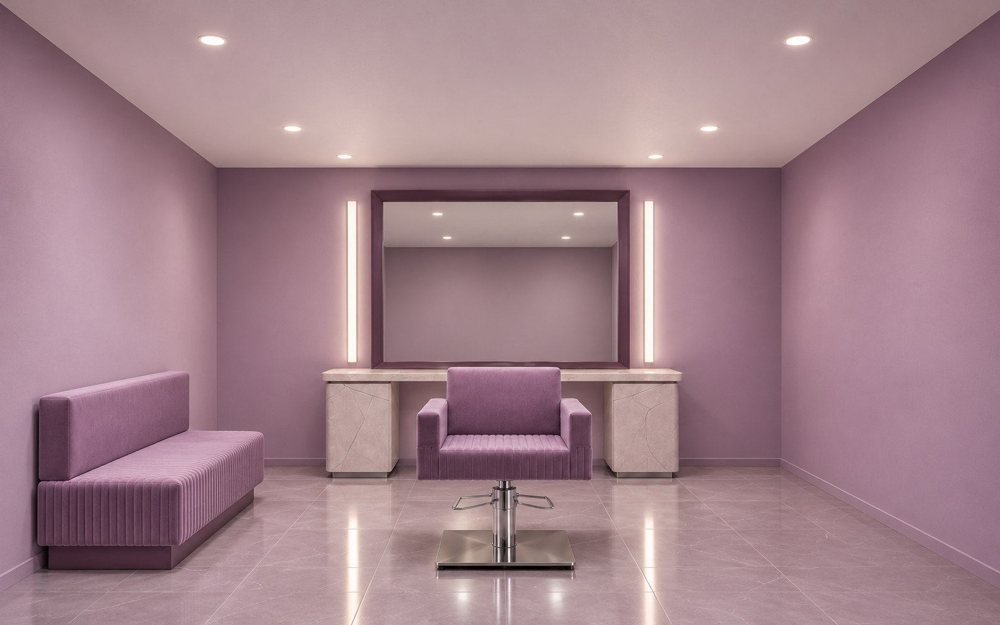
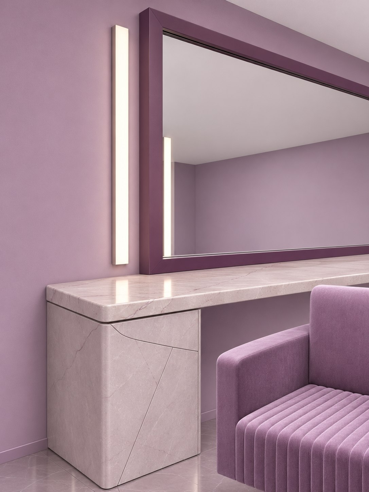
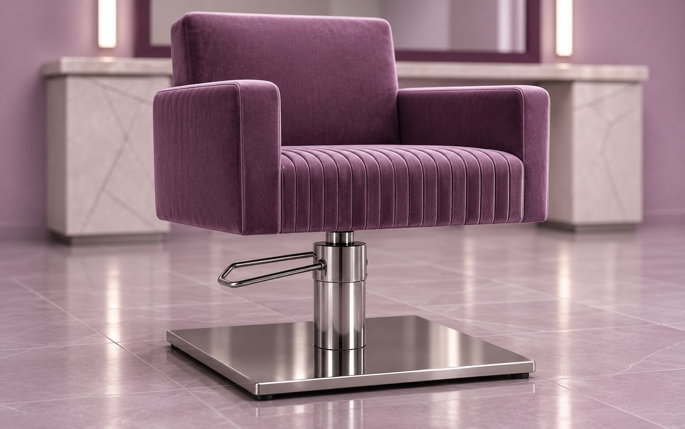

Главный предмет
здесь — свет.
Зеркало показывает реальный оттенок. Материалы не спорят с лицом. Всё остальное работает в спокойном фоне.
Посмотреть развёрткуВизуализации сгенерированы ИИ для концепта; это не фотографии реализованного объекта.
Свет и фактура


По обе стороны зеркала
Вертикальные линии дают мягкое фронтальное освещение. Общий потолочный свет остаётся отдельным контуром.
У лица
Источник скрыт за рассеивателем. Цветопередача проверяется на образцах волос и кожи при подборе светильника.
За спиной
Проход свободен от тележек. Расходные материалы находятся в центральном закрытом модуле.
Работа отделена
от ожидания.
Вход ведёт к администратору. За перегородкой — основная работа; мойка находится дальше от витрины.
- Встреча и ожидание — 12 м².
- Зал — 36 м².
- Мойка — 10 м².
- Служебная зона — 14 м².
Пример — концепт для портфолио. Условная площадь 72 м². Необходимы обмеры и проверка инженерных условий.
Палитра не окрашивает отражение
Матовый фон вокруг зеркал, без блёсток и цветных рефлексов.
Кресла и ожидание; образец тестируется на очистку.
Тонкие опоры и рамки — устойчивый графический контур.
Сервисный цикл
за своей дверью
Чистые и использованные принадлежности не занимают стол администратора. Состав помещений и оборудования уточняется по формату услуг.
- Подготовить рабочий комплект в служебной зоне.
- Хранить запас в закрытом модуле рядом с мастером.
- Вернуть использованный комплект отдельным маршрутом.
Доступ к свету
без демонтажа зеркала
Сервисный зазор и съёмный рассеиватель закладываются в мебельный узел. Электрику и крепления проверяют до изготовления.
Что входит в проект
Пример — концепт для портфолио. Расчёт на 72 м². Без ремонта, оборудования и инженерных разделов.
Визуализация — отдельно, от 30 000 ₽.